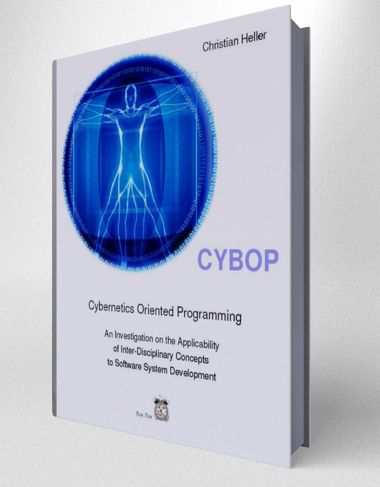

Sapere aude!
Dare to know!
Have courage to
use your own
understanding!
(Immanuel Kant)

CYBOP - The Book
CYBOP stands for Cybernetics Oriented Programming and is a new theory for software development, building on concepts which are taken from nature.
CYBOL is an XML-based application programming- and knowledge specification language and thus completely platform-independent.
CYBOI is the corresponding interpreter, written in C, that is needed to execute systems defined in CYBOL.
| 2022-02-22 | Release CYBOP 0.22.0. |
|---|---|
| 2016-03-07 | Update CYBOL API Specification. |
| more... |